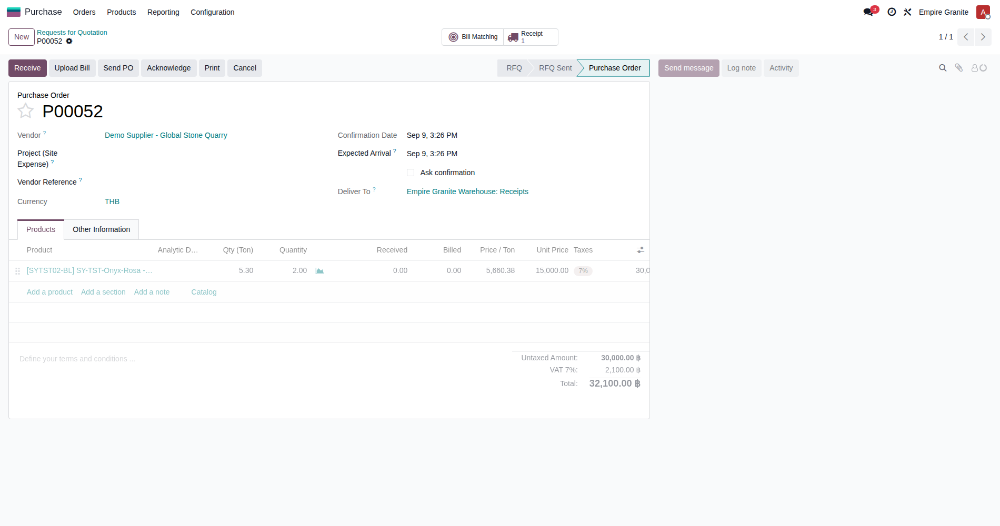
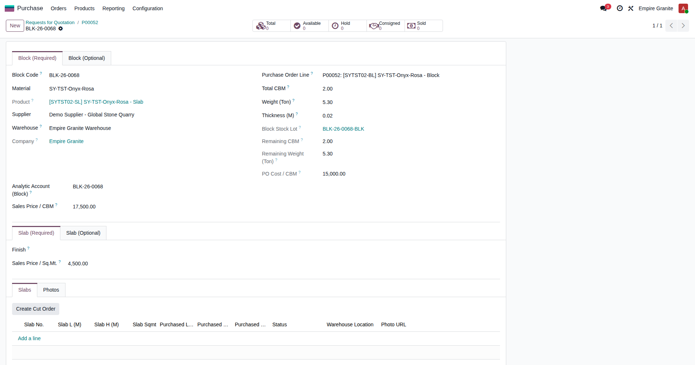
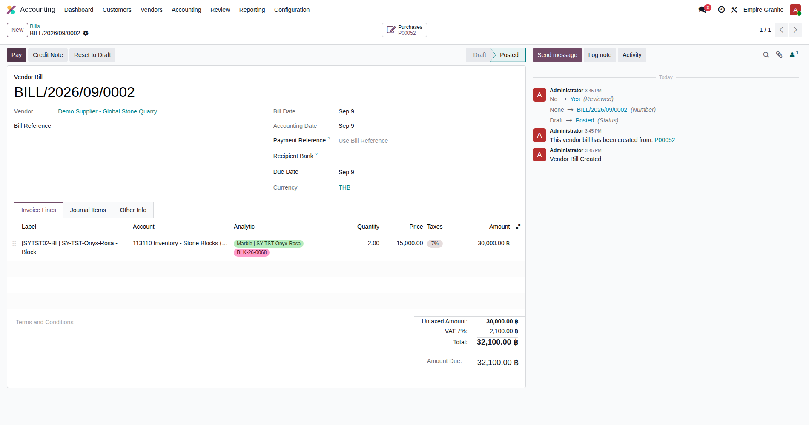
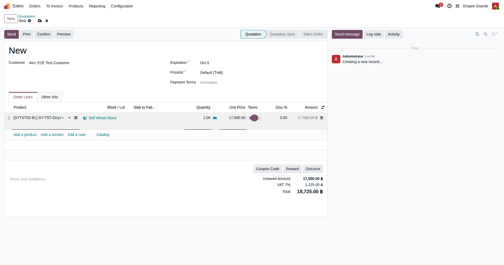
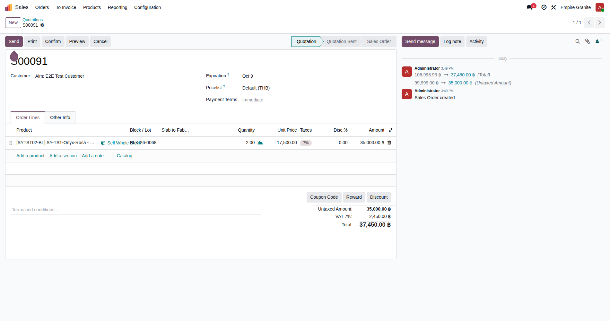
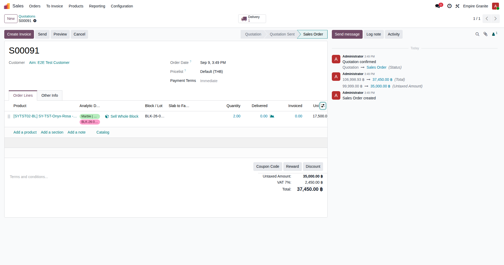
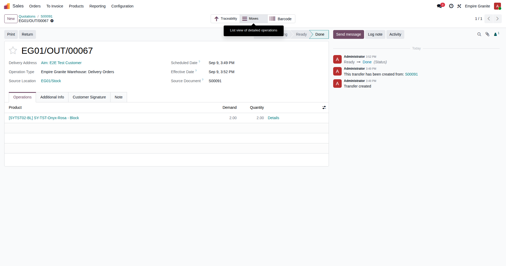
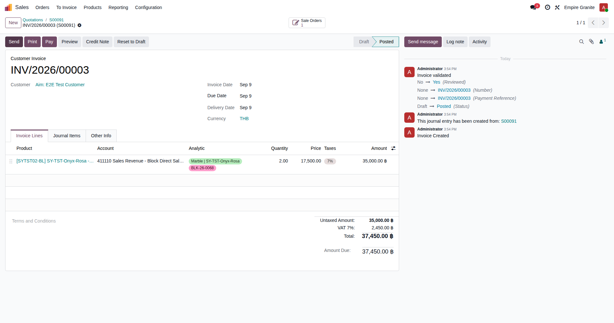
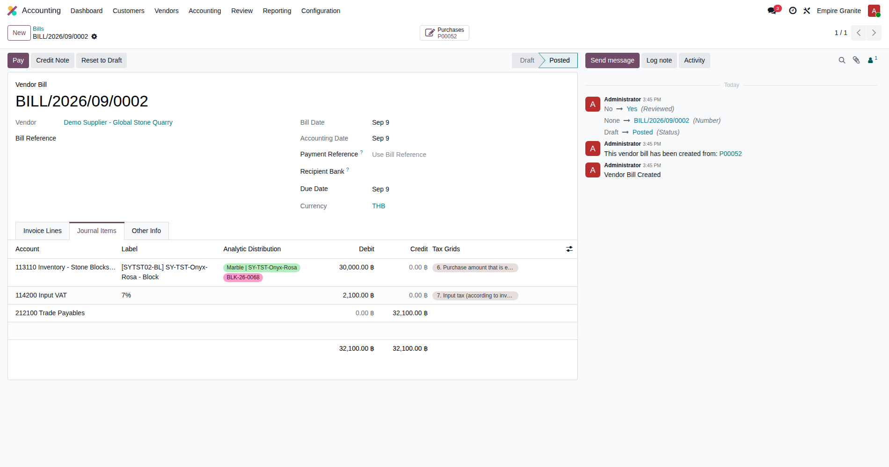
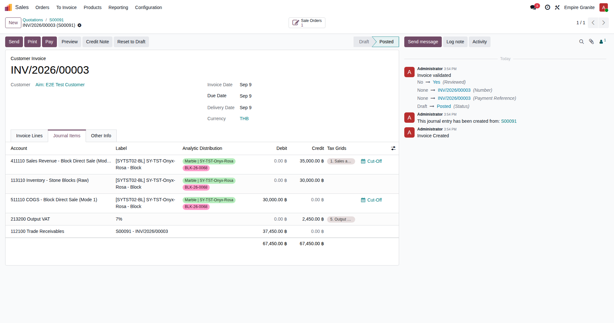

Empire Stone × Empire Granite — QA
Test Cases: E2E Flow — Mode 1 (Block Direct Sale)
เรื่องราวเดียวต่อเนื่องกันตั้งแต่ต้นจนจบ ไม่ใช่การเทสฟีเจอร์แยกส่วน และไม่มีข้อไหนเป็นการดักฟิลด์บังคับ/error — เดินตามได้เองแม้ไม่ใช่ technical user ทุกตัวเลข "ตัวอย่างจริง" ในเอกสารนี้มาจากการรันจริง 1 รอบบน eg-tst (2026-09-09) ไม่ใช่ตัวเลขสมมติ ฉบับปรับปรุงนี้รวมฟีเจอร์ใหม่ (Sales Price/CBM auto-price, ปุ่มลัดสร้าง Block) และการแท็กต้นทุนแยกมิติ — เรื่องการตั้งค่า Material/Product ใหม่แยกไปอยู่เอกสาร "Test Cases: Product/Material Setup" แล้ว
15Test Case ทั้งหมด
7หมวด
9High Priority
6Medium Priority
0Low Priority
E1. ซื้อ (Purchase)
ซื้อ Block หินก้อนใหม่เข้าสต๊อก · 3 test cases
| TC ID | Scenario | Precondition | Steps | ข้อมูลตัวอย่าง | Expected Result | Priority | หน้าจอจริง |
|---|---|---|---|---|---|---|---|
| TC-E2E-M1-01 | สร้างใบสั่งซื้อ (PO) ซื้อ Block | มี Material/Block Product พร้อมแล้ว (ดู Test Cases: Product/Material Setup) และมี Vendor อยู่แล้วในระบบ |
|
Vendor = "Demo Supplier - Global Stone Quarry" สินค้า = SY-TST-Onyx-Rosa - Block จำนวน = 2.00 m³ ราคา/หน่วย = 15,000 |
PO ยืนยันสำเร็จ (state = Purchase Order) ยอดรวมคำนวณถูกต้อง (จำนวน × ราคา + VAT) — ตัวอย่างจริงที่ทดสอบ: P00052 ยอดรวม 32,100.00 | High |  |
| TC-E2E-M1-02 | สร้าง Block (Bundle) ผ่านปุ่มลัด "สร้าง Block" บนบรรทัด PO ✨ ใหม่ (2026-09-09): ไม่ต้องเปิด Inventory > Blocks > New แล้วไปหา PO Line เองอีกต่อไป — กดปุ่มนี้ตรงบรรทัด PO ได้เลย ระบบกรอก Material/Supplier/Warehouse/Total CBM ให้อัตโนมัติจากบรรทัดนั้น ยังคงไม่มีขั้นตอน "Validate Receipt" แยกต่างหาก — Receipt ที่ระบบสร้างให้อัตโนมัติจาก PO จะถูกยกเลิกให้เองเบื้องหลัง (กันสต๊อกซ้ำ) ไม่ต้องไปกดอะไรกับมัน |
ทำ TC-E2E-M1-01 เสร็จแล้ว |
|
Thickness (M) = 0.02 (Total CBM/Material/Supplier/Warehouse กรอกมาให้แล้วจาก PO) |
บันทึกสำเร็จ ได้เลขก้อนอัตโนมัติ (ตัวอย่างจริง: BLK-26-0068) ช่อง "PO Cost / CBM" ขึ้น 15,000 ให้เอง, "Sales Price / CBM" ขึ้น 17,500 ให้เองจาก List Price ของ Block Product, Remaining CBM = 2.00 (รับสต๊อกเข้าจริงแล้ว) | High |  |
| TC-E2E-M1-03 | สร้างและยืนยันบิลผู้ขาย (Vendor Bill) | ทำ TC-E2E-M1-01 เสร็จแล้ว (PO อยู่สถานะ Purchase Order) |
|
Vendor = "Demo Supplier - Global Stone Quarry" Auto-Complete = P00052 |
บิลสถานะ Posted ยอดตรงกับ PO บัญชีที่ลงถูกต้องเป็น "113110 Inventory - Stone Blocks (Raw)" ไม่ใช่บัญชี COGS ทั่วไป (ตัวอย่างจริง: BILL/2026/09/0002, 32,100.00) | High |  |
E2. ขาย (Sale — Mode 1)
ขายทั้งก้อนตาม CBM (ADR-019) · 3 test cases
| TC ID | Scenario | Precondition | Steps | ข้อมูลตัวอย่าง | Expected Result | Priority | หน้าจอจริง |
|---|---|---|---|---|---|---|---|
| TC-E2E-M1-04 | สร้าง Sale Order ให้ลูกค้า | - |
|
ลูกค้า = "E2E Test Customer" สินค้า = SY-TST-Onyx-Rosa - Block |
เพิ่มบรรทัดสำเร็จ ปุ่ม "Sell Whole Block" ปรากฏบนบรรทัดนั้น (ราคาที่ขึ้นตอนนี้เป็นแค่ List Price เริ่มต้นของสินค้า ยังไม่ใช่ราคาจริงของก้อนนี้) | Medium |  |
| TC-E2E-M1-05 | กด "Sell Whole Block" เลือกก้อนที่ซื้อมา — ราคาคำนวณอัตโนมัติ ✨ ใหม่ (2026-09-09): เดิม Unit Price ต้องพิมพ์เองหลังเลือกก้อน ตอนนี้ระบบดึง "Sales Price / CBM" ของก้อนนั้นมาใส่ให้อัตโนมัติทันทีที่กด Confirm Selection — พิมพ์ราคาอื่นทับไว้ก่อนก็ได้ ระบบจะเขียนทับด้วยราคาจริงของก้อนเสมอ |
ทำ TC-E2E-M1-04 เสร็จแล้ว, มี Block สถานะ Available จาก TC-E2E-M1-02 |
|
เลือก Block = BLK-26-0068 | บรรทัด SO ปรับจำนวนเป็น CBM ทั้งหมดของก้อนนั้นอัตโนมัติ (2.00) ราคาต่อหน่วยเปลี่ยนเป็น 17,500.00 ทันที (จาก Sales Price / CBM ของก้อน ไม่ใช่ราคาที่พิมพ์ไว้ก่อนหน้า) ยอดรวมบรรทัด 35,000.00 | High |  เห็นในช่อง Log ด้านขวาด้วยว่าระบบเขียนทับราคาที่พิมพ์ไว้ก่อน (99,999) ด้วยราคาจริงของก้อน |
| TC-E2E-M1-06 | ยืนยัน (Confirm) Sale Order | ทำ TC-E2E-M1-05 เสร็จแล้ว |
|
- | SO เปลี่ยนสถานะเป็น Sales Order มี Delivery Order เกิดขึ้นให้อัตโนมัติ 1 ใบ (ตัวอย่างจริง: S00091 → EG01/OUT/00067) | High |  ภาพเดียวกับ TC-E2E-M1-14 — เห็นทั้งสถานะ Sales Order และคอลัมน์ Analytic Distribution ในภาพเดียวกัน |
E3. ผลิต (Production)
Mode 1 ไม่มีขั้นตอนนี้ · 0 test cases
| TC ID | Scenario | Precondition | Steps | ข้อมูลตัวอย่าง | Expected Result | Priority | หน้าจอจริง |
|---|---|---|---|---|---|---|---|
| TC-E2E-M1-N/A | (ไม่มี Test Case ในหมวดนี้สำหรับ Mode 1) Mode 1 ขายทั้งก้อนโดยไม่ผ่านการตัด/ผลิตใดๆ — ลูกค้าซื้อก้อนดิบทั้งก้อนไปทั้งดุ้น ไปต่อที่การจัดส่งได้เลย ขั้นตอนผลิตจะมีใน Mode 3 (Cut-to-Order)/Mode 5 (FG Production) เท่านั้น |
- |
|
- | - | Low | — |
E4. จัดส่ง (Delivery)
ส่งของจริงออกจากคลัง · 2 test cases
| TC ID | Scenario | Precondition | Steps | ข้อมูลตัวอย่าง | Expected Result | Priority | หน้าจอจริง |
|---|---|---|---|---|---|---|---|
| TC-E2E-M1-07 | เปิดใบส่งของ (Delivery Order) ที่เกิดขึ้นอัตโนมัติ | ทำ TC-E2E-M1-06 เสร็จแล้ว |
|
- | เห็นใบส่งของสถานะ "Ready" สินค้า 1 บรรทัด จำนวนตรงกับ SO (2.00 m³) | Medium |  |
| TC-E2E-M1-08 | ยืนยันการส่งของจริง (Validate) | ทำ TC-E2E-M1-07 เสร็จแล้ว |
|
- | ใบส่งของเปลี่ยนสถานะเป็น Done (ตัวอย่างจริง: EG01/OUT/00067) — Block ก้อนนั้นหายจากสต๊อกที่ขายได้ (Available) แล้ว | High |  |
E5. บัญชี (Accounting)
ออกใบแจ้งหนี้ + ตรวจรายการบัญชีของทั้งเรื่อง · 4 test cases
| TC ID | Scenario | Precondition | Steps | ข้อมูลตัวอย่าง | Expected Result | Priority | หน้าจอจริง |
|---|---|---|---|---|---|---|---|
| TC-E2E-M1-09 | สร้างและยืนยันใบแจ้งหนี้ลูกค้า (Customer Invoice) | ทำ TC-E2E-M1-08 เสร็จแล้ว |
|
- | ใบแจ้งหนี้สถานะ Posted ยอดรวมตรงกับ SO รวม VAT (ตัวอย่างจริง: INV/2026/00003, 37,450.00) | High |  |
| TC-E2E-M1-10 | ตรวจรายการบัญชีฝั่งซื้อ — Vendor Bill | ทำ TC-E2E-M1-03 เสร็จแล้ว |
|
- | เห็น 3 บรรทัด: เดบิต 113110 Inventory - Stone Blocks (ยอดสินค้าก่อน VAT), เดบิต 114200 Input VAT, เครดิต 212100 Trade Payables (ยอดรวม) — ตัวอย่างจริง: 30,000 / 2,100 / 32,100 บัญชีถูกต้องตรงตัว ไม่ใช่บัญชี COGS ทั่วไป | Medium |  |
| TC-E2E-M1-11 | ตรวจรายการบัญชีฝั่งรายได้ + ต้นทุนขาย บนใบแจ้งหนี้ | ทำ TC-E2E-M1-09 เสร็จแล้ว |
|
- | เห็น 5 บรรทัดบนใบแจ้งหนี้ใบเดียว: เครดิต 411110 Sales Revenue - Block Direct Sale (Mode 1), เดบิต 113110 Inventory (ตัดออก), เดบิต 511110 COGS - Block Direct Sale (Mode 1), เครดิต 213200 Output VAT, เดบิต 112100 Trade Receivables — ตัวอย่างจริง: รายได้ 35,000 / COGS-Inventory คู่ละ 30,000 / VAT 2,450 / ลูกหนี้ 37,450 (ยอดรวมสมดุล 67,450 = 67,450) | High |  |
| TC-E2E-M1-12 | ตรวจว่าต้นทุนขาย (COGS) ถูกบันทึกซ้ำหรือไม่ ✅ ปิดเคสแล้ว — ตรวจซ้ำด้วย fixture ใหม่ (2026-09-09) ยืนยันว่าการแก้ไข ADR-054/055 (session ก่อนหน้า) ยังใช้ได้ดี: ไม่มี Journal Entry แยกต่างหากจากใบส่งของอีกต่อไป (เดิมมีปัญหาชื่อขึ้นต้น STJ ซ้ำกับใบแจ้งหนี้) — Delivery ไม่สร้าง Journal Entry ของตัวเองแล้ว COGS มีบันทึกอยู่ที่เดียวคือในใบแจ้งหนี้ (TC-E2E-M1-11) |
ทำ TC-E2E-M1-08 เสร็จแล้ว (Delivery = Done) |
|
- | ไม่พบ Journal Entry แยกต่างหากสำหรับใบส่งของนี้เลย — COGS/Inventory มีบันทึกอยู่ที่เดียวคือในใบแจ้งหนี้ (INV/2026/00003) ไม่มีการนับซ้ำ | High | ไม่มีภาพแยกของ Journal Entries ที่ว่างเปล่า — ใช้ภาพเดียวกับ TC-E2E-M1-11 อ้างอิงว่า COGS มีบันทึกอยู่ที่เดียวจริง |
E6. สรุปกำไร (Gross Margin)
สรุปเทียบกำไรขั้นต้นของทั้งเรื่อง · 1 test case
E7. ต้นทุนแยกตามมิติ (Cost-by-Material Analytics)
Analytic-Architecture ใหม่ 2026-09-09 · 2 test cases